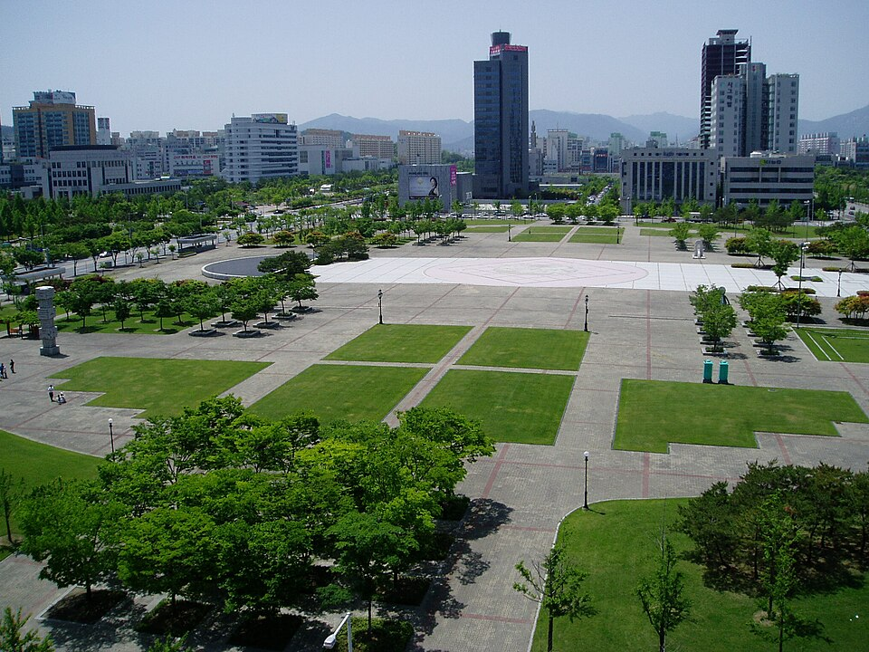

대전 서구는 관리 중인 중·고등학교만 마흔 곳이 넘습니다. 대전둔원고등학교·충남고등학교·한밭고등학교·대전관저고등학교 같은 고등학교와 대전탄방중학교·대전만년중학교·대전관저중학교·가수원중학교가 구 안에 흩어져 있습니다. 둔산·탄방 쪽과 관저·가수원 쪽은 같은 구라도 오가는 데 시간이 들어서, 저녁이 이동으로 묶이는 학생은 집으로 오는 1:1 중등 수학과외나 고등 과학과외를 따로 찾게 됩니다.
오늘은 대전 서구로 직접 찾아가는 선생님들 가운데 맡는 과목과 방문 동네가 다른 두 분을 소개합니다. 한 분은 수학을 초등부터 고3까지 보는 선생님, 한 분은 수학과 과학을 중1부터 고2까지 같이 보는 선생님입니다.
서구에서 중등 수학과외 상담이 들어오는 시점은 대개 진도가 아니라 구멍입니다. 지금 단원이 막히는 이유가 한두 학기 전에 있는 경우입니다. 이 선생님은 입시전문 학원에서 중·고등부를 가르친 이력이 있어, 내신과 모의고사를 따로 두지 않고 한 흐름으로 관리합니다.
초등 1학년부터 고3까지 폭이 넓다는 점이 실제로는 가장 큰 장점입니다. 중학교에서 시작해 고등까지 선생님을 바꾸지 않아도 됩니다. 중등은 수행평가까지 같이 챙기고, 시험 기간에는 기출문제를 준비해 옵니다. 방문 동네는 서구 원내동·가수원동·관저동 쪽이고 유성구도 가능하며, 화상 수업도 됩니다. 코딩(자바스크립트·파이썬·로블록스 루아)도 지도합니다.
윤ㅇ이 선생님 상세 프로필 →서구에서 고등 과학과외를 따로 찾는 이유는 대개 한 가지입니다. 수학은 봐 주는 곳이 많은데 과학까지 같이 봐 주는 선생님이 드물기 때문입니다. 이 선생님은 수학과 과학을 한 사람이 같이 맡습니다. 두 과목의 기초가 겹치는 구간에서는 이 편이 설명이 빠릅니다.
수학 전문학원에서 8년을 가르친 경력이 있고, 지도 범위는 중1부터 고2까지입니다. 소개에 적어 둔 원칙이 분명합니다. 모르는 것을 배우러 오는 수업이니 수업 중에 화내지 않는다는 것과, 성적이 낮은 학생도 천천히 이해할 수 있게 지도한다는 것입니다. 다른 수업에서 위축된 적이 있는 학생이라면 이 점을 먼저 보셔도 좋습니다. 방문 동네는 서구 둔산동·탄방동 쪽이고, 저녁 수업과 화상 수업이 가능합니다. 검정고시 준비도 지도합니다.
유ㅇ종 선생님 상세 프로필 →학교마다 진도와 시험 범위가 달라서, 학교별로 준비법을 따로 정리해 두었습니다.
👉 서구 수학과외 선생님 · 서구 과학과외 선생님 · 서구 관리 학교 전체 보기